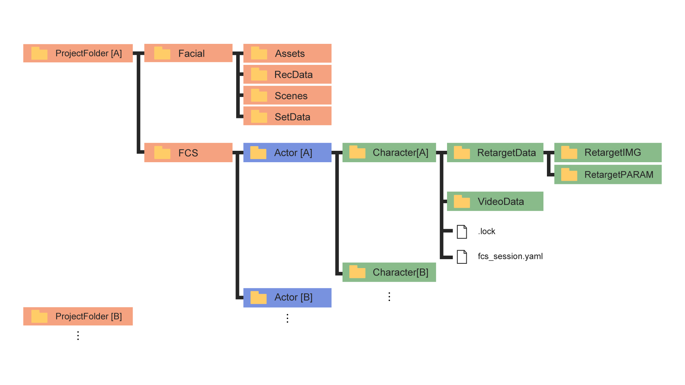
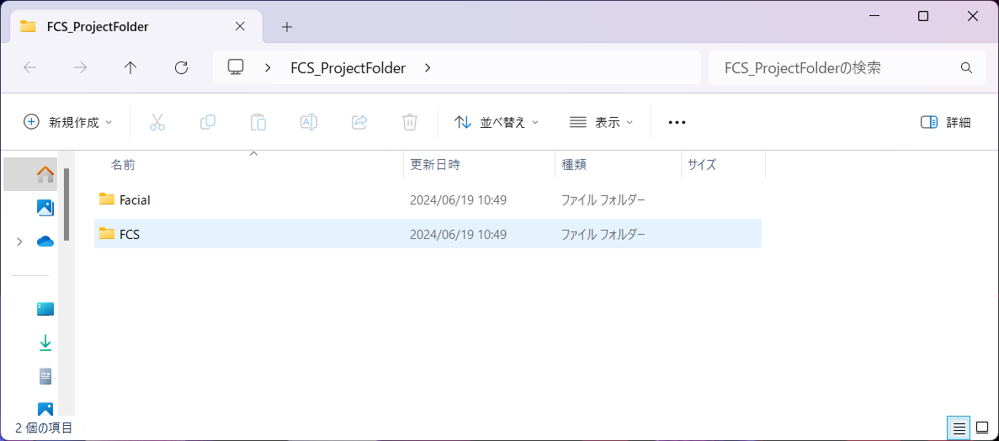
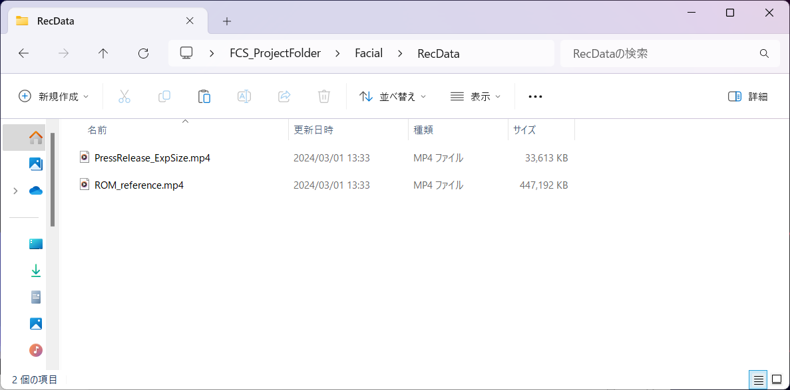
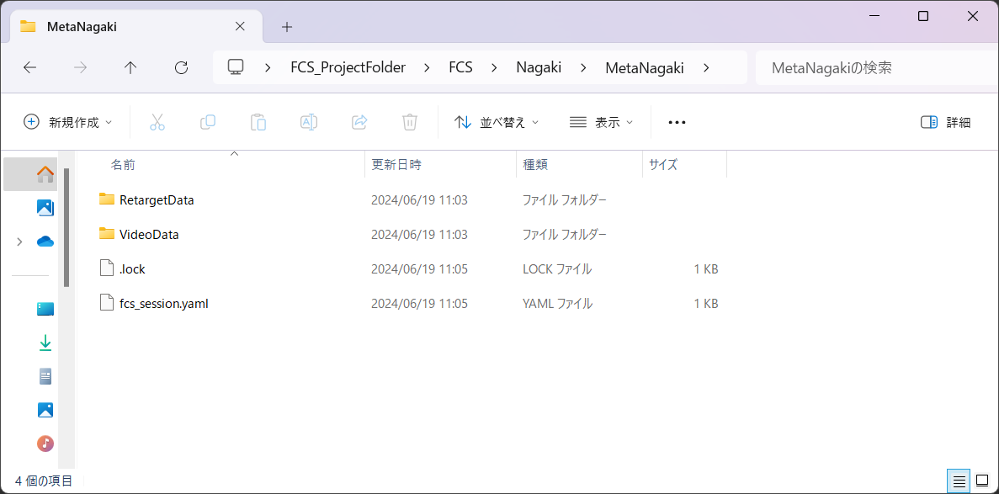

Create or open a Session
In FCS, a file that links actor information, character information, Maya scene information, and analysis data is called a “Session.”
After starting FCS, go to “New…(Create new Session)” or “Open” to access the Session data.
Note
By settings details for a Session at the beginning, you can start working with the buttons on FCS without having to operate Maya separately.
Folder structure created by Create new Session
Red: Folders created when setting up a new project
Blue: Folders created when setting up a new actor
Green: Folders created when setting up a new character
.lock/fcs_session.yaml: File create after setting up a new session

Facial: folder to save materials (i.e., HMC videos and Maya scene data)
FCS：解析に使用するデータが保存されるプロジェクトフォルダ
- Actor：Actorで作成したフォルダ。Actorで入力した名前が表記される
- Character：Characterで作成したフォルダ。Characterで入力した名前が表記される
- RetargetData（IMG/PARAM）：作成したProfileの編集データ（画像や数値情報）が保存される
- VideoData：解析する動画のキャッシュが保存される
- .lock：競合を防ぐためのロックファイル。起動時/終了時に自動で作成/消去される
- fcs_session.yaml：session情報を保存しているファイル
Creating a new Session
File▶Session▶New…を選択

 1. Project Folder: Select the location where you want to save the FCS project data
1. Project Folder: Select the location where you want to save the FCS project data
2. Actor: Motion capture actor name
3. Character: 3D model character name
4. Maya Scene: Path to the 3D model Maya scene
5. Maya Base: Path to the folder where Assets and workspace.mel are located
6. Maya Ver: Select the version of the data created in the scene
①Project Folder settings
Browseボタンをクリックし、Project Folderを指定するためウィンドウを起動します。
FCSのデータを保存したい任意のフォルダを選択

Project Folderを作成します。
Create

問題なく作成できたらポップアップが表示されます。
close

Facial and FCS folders will be created. 
Note
Project Folder作成後
Put Maya scene at Project Folder▶Facial▶Assets folder
Project Folder▶Facial▶Recdataフォルダに解析したい動画を移動しておくことを推奨します。
※別の場所に保存していてもアクセスできます。

②Actorの設定
「+」ボタンをクリックし、ActorFolderを作成するための 「Create new actor folder」ウィンドウを起動します。
Input
Actor nameActor: name of the facial motion actorCreate
問題なく作成できたらポップアップが表示されます。
close

エクスプローラーでProject Folderフォルダ直下に入力したActerフォルダが作成されます。
③Setting Character
「+」ボタンをクリックし、characterFolderを作成するための「Create new character Folder」ウィンドウを起動します。
「Character Name」の入力欄に登録したい名前を入力
Create
The Character folder you entered will be created directly under the Actor folder in Explorer. 
④Setting Maya Scene
Browseボタンをクリックし、MayaSceneを指定するためウィンドウを起動します。
MayaSceneデータのパスを指定

⑤Setting Maya Base
Browseボタンをクリックし、MayaBaseを指定するためウィンドウを起動します。
workspace.melがある場所(Mayaシーンのプロジェクト設定で登録している場所)を指定
Attention
“workspace.mel” is not displayed in the popup window in FCS
⑥Setting Maya Ver
④で設定したsceneを作成したMayaのバージョンを指定

全て入力を終えたらSaveボタンを押してください。
Save

fcs_session.yaml (FCS file) will be created directly under the character folder in Explorer. 
Note
The .lock file is used to prevent others from accessing the file while you are working on it. They are automatically deleted when you finish your work properly.
Note
If the .lock file remains because of incorrect shut down, etc, please delete the file from the popup when you are starting FCS or delete the file directly in Explorer.
If a Session has already been created
Open Session from history or fcs_session.yaml file.
Open Session from history
以前にSessionを起動している場合、File▶Session▶Openの下に履歴が表示されます。
Click on the session to work on
Open Session from fcs_session.yaml file
File▶Session▶Open▶Open…
OpenSessionウィンドウが開かれたらローカルとネットワークドライブが表示されます。Characterフォルダ直下にあるfcs_session.yamlファイルを選択し、開く

Cautions regarding opening a Session
Startup multiple sessions concurrently
Warning
While creating/opening a new Session, you cannot create or start another Session. To open another session, close the current session, restart FCS, and reopen it.
「⑥Maya Verの設定」をしても反映されない場合
You can check the setting details when you create the session under File▶Session▶info. 
If the MayaVersion setting in NewSession is not reflected in info, right-click MayaVersion on the info screen and select Edit so that you can edit the details.
Attention
Please click the Save button after changing settings.